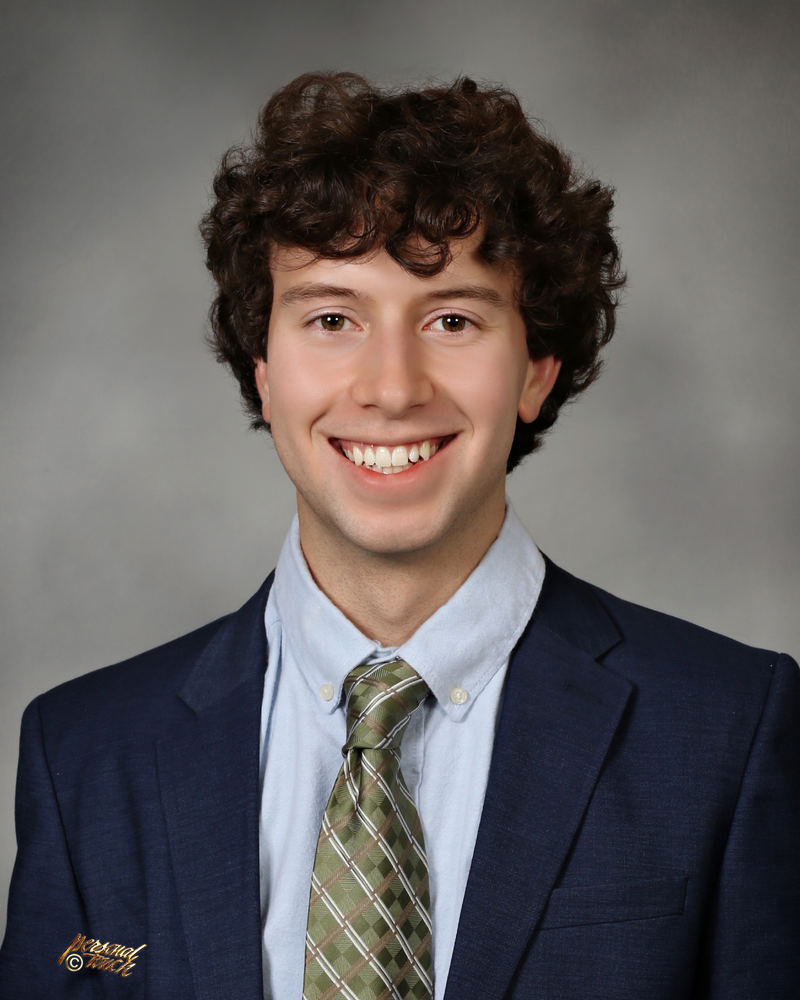

Sam King
Program Co-Director
Sam King (he/him) is a 3rd-year MD/PhD student in the OHSU School of Medicine. His research applies computational methods to reproductive biology and the genetic causes of male infertility at the Oregon National Primate Research Center (ONPRC).Sam has mentoring and teaching experience as a lab mentor at Purdue University, a Supplemental Instruction Leader for anatomy and physiology, and a tutor in science and math. He is passionate about encouraging students to explore careers in science and medicine, aiming to make these fields more accessible.
LinkedIn profile